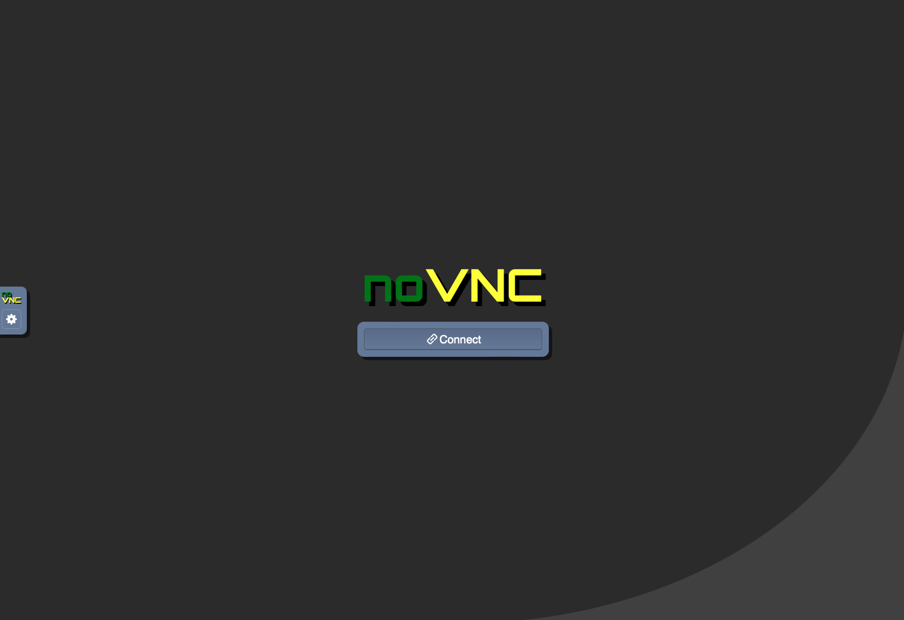
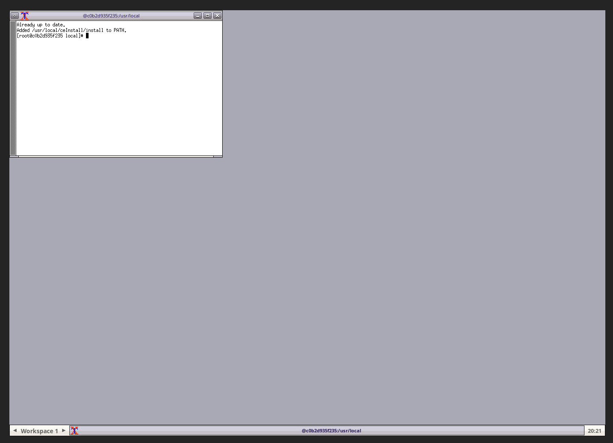
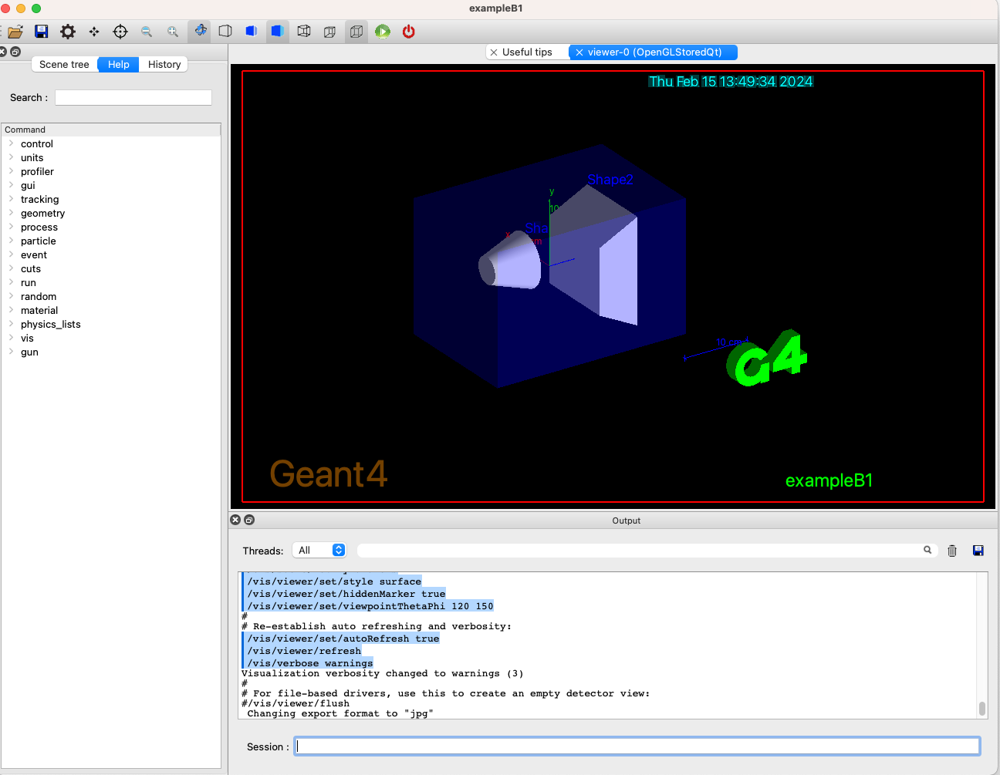
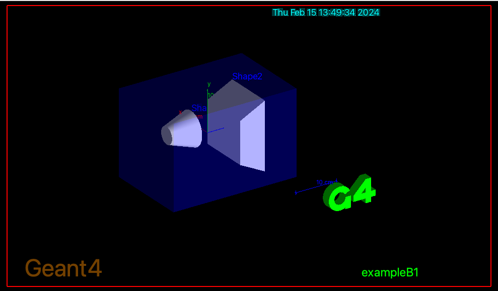

Introduction
During the next days we will develop a Geant4 application that will use Geant4 libraries, version 11.2.1.
Geant4 is a toolkit, thus a Geant4 installation consists of a set of library
and header files (plus resource files: the data-base data and
examples source code).
You create an application compiled and linked against a Geant4 installation.
Hands On 1: Setting Up the Environment
In this first hands on you will learn:
- How to install Geant4 and some of the most common configuration options (OPTIONAL)
- How to compile an application against an installed version of Geant4
- How to run an application and interact with Geant4
There is no exercise tar-ball for this first hands on since we use Geant4 code base.
We are going to use Geant4 Version 11.2.1 (Geant4 version numbers
are expressed with the triplet of numbers: Major.Minor.PatchLevel).
All the Hands On instructions of this week, we will use the following conventions:
-
This font represents shell input/output,
C++ code or file names.
- The lines that start with the character
$ represents
Linux shell commands that you have to type in while you are on the OS shell.
-
<tutorial> is the working directory.
You must replace this string with the appropriate directory path in your disk space.
-
Strings in parenthesis (
[ and ])
are optional.
Depending on your machine or your preference, follow one of the four installation procedures.
Dependencies
With its basic installation options Geant4 Version 11.2.1 does not
have external dependencies, except a recent version of cmake1
.
Geant4 version 11.2.1 contains C++11
code, this means that the compiler needs to support this standard.
With recent versions of Linux this is the default,
but you may need to manually install and setup a compiler in some cases.
Refer to the Geant4 installation guide
for additional information, including the list of supported compilers.
Visualization and GUI
We will also describe how to
setup and use the interactive graphical user interface (GUI) based on
Qt.
We use Qt version 5.6. Many Linux distributions already have a pre-installed version of Qt. It is relatively easy to
manually install Qt on a Linux or Mac system, but we will not cover
this step in this tutorial.
This component is optional, if you do not want to use Qt, simply skip the Qt options during
configuration. None of exercises require GUI interfaces to be completed.
If you do not have Qt or do not want to use it, the examples in
this tutorial will fall back to simple OpenGL graphics. In such a case
to enable OpenGL graphics, use
-DGEANT_USE_OPENGL_X11=ON when configuring G4 with
cmake.
While for Linux this should not be a problem, it could
have issues on Mac systems. If this fail, contact us.
Multi-threading
Starting with Geant4 Version 11 series, we introduced event level parallelism via
tasking mechanism. This means that we will develop a parallel application
that will simulate events using multiple number of available cores of your machine.
This is an optional component, by default it is on, but if you do not want to enable MT you can still follow the exercises
as they are, since the code is also compatible with the sequential
version of Geant4.
Step 0: Obtain the Geant4 code
After downloading and un-packing Geant4 tarball
(geant4-v11.2.1.tar.gz) in an empty working
directory, you also need to
create build and install directories where the compilation of Geant4 is
performed, and resulted Geant4 libraries and related scripts are installed,
respectively: cmake uses out of source builds.
$ cd <tutorial>
$ wget http://cern.ch/geant4-data/releases/geant4-v11.2.1.tar.gz
$ tar zxpf geant4-v11.2.1.tar.gz
$ mkdir build install
$ ls
build geant4-v11.2.1 geant4-v11.2.1.tar.gz install
Step 1: Configuration
In the following we assume you are using a Linux machine. For Mac users there
are little differences, except that you will rely on the system compiler (clang) and cannot set an
alternative compiler (in an easy way).
Let's configure Geant4:
$ cd build
$ cmake -DCMAKE_INSTALL_PREFIX=../install -DGEANT4_INSTALL_DATA=ON -DGEANT4_USE_QT=ON -DGEANT4_USE_OPENGL_X11=ON ../geant4-v11.2.1
Notes:
- If you do not have wget you may download the Geant4 tar ball from Geant4 download page.
You may also download the source code from
CERN GitLab or GitHub.
- Instead of cmake, you may use ccmake to configure build options one by one. With ccmake you may also easily configure, for example, where data files are stored.
- If you have an old version of Linux with a default compiler with a version <4.8.2,
type
gcc --version to get the compiler version, you need to have installed
an alternative more recent compiler. For example if you have a CentOS 6 or Scientific Linux 6
distributions you need to manually install a recent compiler. After doing that you need
to prepend to the cmake line: CC=gcc CXX=g++ and make sure that
gcc and g++ binaries are the correct one.
Replace gcc and g++ with your alternative compiler if you have one
and you want to use it
(e.g. icc and icpc for Intel C compiler).
If everything goes as expected cmake will work
few seconds on the configuration. The last lines should read:
-- Configuring done
-- Generating done
-- Build files have been written to: <tutorial>/build
Additional Notes and configuration options:
- If you do not want to use Qt, remove the
-DGEANT4_USE_QT=ON option. If you want
multi-threaded support to be removed, add -DGEANT4_BUILD_MULTITHREADED=OFF.
- If you disable Qt it is recommended to leave OpenGL with:
-DGEANT4_USE_OPENGL_X11=ON.
-
With Mac OS X you need XQuartz to be properly installed beforehand to use OPENGL_X11 option.
-
If you have installed Qt manually, and you are using Qt 5.6, you may need to
add:
-DCMAKE_PREFIX_PATH=<where-qt-is-installed>/5.6/gcc_64
to cmake options if Qt is not found (you may need to adjust the path).
- Refer to the
installation manual for a complete list of installation options. There are many more options available.
- If you already have installed Geant4 databases somewhere in your
system, you can avoid downloading the same library by adding
-DGEANT4_INSTALL_DATADIR=where-the-dbs-are.
- If you receive an error about
EXPAT libraries, you can disable them with
-DGEANT4_USE_SYSTEM_EXPAT=OFF.
- If you want to use an already installed version of CLHEP,
instead of using the Geant4 internal one, you can specify that via the option:
-DGEANT4_USE_SYSTEM_CLHEP=OFF. You may need to specify
where to find CLHEP (see installation manuals).
- If you want to use an IDE you can specify the
option
-G<ide-type-goes-here> (run cmake without options to see a list of
supported IDEs on your system. For example
-
on Mac OS X with Xcode:
cmake -GXcode [...]
- forKDevelop3 support:
-GKDevelop3
- for Eclipse:
cmake -G"Eclipse CDT4 - Unix Makefiles" [...]
In such a case instead
of makefiles cmake will create project files for that IDE.
Step 2: Compilation
Compile Geant4, on a multi-core system with N cores you can
substantially speedup compilation. In the build directory:
$ make -j N #or gmake -j N
$ make install
Notes:
-
If not sure how many cores you have, try one of the following commands:
$ cat /proc/cpuinfo | grep processor | wc -l
$ getconf _NPROCESSORS_ONLN
If still unsure, use -j 2.
-
You can have a verbose compilation (for example to see the exact
compilation options) using
make VERBOSE=1 -j N.
After Geant4 has been compiled and installed the content of the
<tutorial>/install directory should contain the directories:
bin share include lib[64]
The include directory contains a sub-directory
(Geant4) where all the .hh files are
located. The directory lib[64] contains all Geant4
libraries and a sub-directory: Geant4-11.2.1, this
contains cmake files specific to Geant4 (they are used to compile an
application via cmake that uses Geant4).
Docker is a tool designed to make it easier to run applications by using containers.
Containers allow a developer to package up an application with all of the parts it needs,
such as libraries and other dependencies, and ship it all out as one package.
Docker is available for Linux, Windows and MacOS. You can find the installation instructions
for your OS here.
We have a Docker image with Geant4 11.2.1 installed.
You can pull it by running the following command (note, you only need to pull once):
$ docker pull jeffersonlab/sim:g4v11.2.1-fedora36-cvmfs
A productive way to use this image is to create a directory on your local machine
to share with the container (we'll use ~/mywork as an example). This way you can edit your work
on your local machine and run it in the container.
$ mkdir ~/mywork
Run the image in batch mode or interactively, mounting ~/mywork and making it available as /usr/local/mywork.
Here is how:
Run in Batch Mode:
$ docker run --platform linux/amd64 -it --rm -v ~/mywork:/usr/local/mywork jeffersonlab/sim:g4v11.2.1-fedora36-cvmfs bash
In batch mode the environment will load automatically and you will see this prompt:
[root@8eec32cdb4ea local]#
You are now inside the container, and can run Geant4 examples/applications w/o GUIs.
When you are done, type exit to leave the container.
Run Interactively:
$ docker run --platform linux/amd64 -it --rm -p 8080:8080 -v ~/mywork:/usr/local/mywork jeffersonlab/sim:g4v11.2.1-fedora36-cvmfs
On some MacOS systems with M[1,2,3] CPU, you may need to disable the "Use Rosetta" option for docker to run properly.
In interactive mode a prompt will not appear, but the following message will be displayed:
Browse to:
http://localhost:8080/vnc.html
Navigate to the URL in your web browser to access the container's desktop environment. You will
see this image:
 |
Click the connect button to access the container's desktop environment. You will be able to run Geant4 examples/applications with GUIs:
 |
When you are done, CNTRL-C in the terminal to stop the container.
You may download binary images of pre-compiled Geant4 libraries for selected combinations of OS and compiler.
You also need to download necessary data files from Geant4 download page.
Note for virtual machine user:
if you are using a VM,
even if you have a multi-core laptop it is possible that the
VM sees only one CPU core.
It is usually just a matter of VM
configuration to allow more than one CPU in the guest OS.
The Geant4 Virtual Machine provides a recent version of the Geant4 source code,
examples and libraries; it includes a compiler and extra software such as
a large set of visualisation libraries and analysis tools.
It provides a fully working Geant4 system.
It helps you avoid the effort to find and install the key pieces needed to create an installation on your own system,
which varies depending on the OS, its version and many other factors.
The following information is a summary of the key steps. Further guidance can be found at
the CENBG home of the Geant4 Virtual Machine.
Step 1: Ensure that your machine can run the Geant4 Virtual Machine
Make sure that your computer meets the minimum requirements:
- Windows or Linux users : desktop or laptop PC running Windows (preferably 10)
- Linux: desktop or laptop PC with a recent Linux release (able to run
VMware workstation for Linux)
- Mac users : Mac with a recent version of macOS (capable of running the virtualization software below)
- at least 30 GB of free disk space available
- at least 4 GB of RAM available for the virtual machine on the PC or Mac - so likely a total of at least 6 or 8 GB installed.
Step 2: Obtain a Virtual Machine 'player'
There is a choice of Virtual machine host software. The following is what we recommend:
- On Windows you can choose between VMware
Player (free for non-commercial, personal and home use) or
VMWare Workstation Pro
- On Linux the VM
Workstation Player can be obtained for use and evaluation.
- On macOS VMware Fusion has a download for evaluation,
but is a commercial product (after the evaluation period of 30 days, a license must be purchased to keep using it).
Note that the versions we found to work are:
- Fusion 13.5.0,
the latest, supports macOS versions 12 Monterey and later (i.e. 14 Sonoma);
- Fusion 12.2.5,
supports macOS versions 11 Big Sur and later (i.e. 12 Monterey and 13 Ventura).
If you identify issues with the recommended software or versions, please inform us.
Step 3: Obtain the Geant4 virtual machine
Obtain the Virtual machine file which corresponds to your player, and uncompress it:
- Download the Geant4 Virtual Machine. Note that the VM file is quite large (>18 GBytes),
and may take a long time to download (will depend greatly on your network bandwidth).
- The file to download is located at:
- We recommend to start to download it few days before the course, to ensure that you can obtain it, and to familiarize yourself with it.
For more information about the Geant4 VM see CENBG home page.
Step 4: Un-compressing and starting the Virtual Machine
You need software which can un-compress '7z' files. There are many other choices, such as the popular (de-)compressor
WinZip.
On macOS you may use the built-in Archive Utility.
Follow the instructions in the readme
file for launching the VM.
Note that you may encounter issues on opening the VM file:
- on PC, including Windows and some Linux systems, you will likely need to enable features needed for virtualization in the BIOS.
This is needed if you encounter a message such as "Intel Vtx is disabled...";
- on macOS you may need to grant access to some resources to Fusion -- this may require a reboot.
Step 5: Locate the Geant4 installation and check it
- The virtual machine will boot.
- You should now obtain a (Linux) desktop, which is mostly empty.
- Its menus can be found in the top left corner (icon and 'Activities').
- It's keyboard is configured as French 'AZERTY'. You can change this to US 'QWERTY' layout by
changing the keyboard settings using "Settings" from the menu on the top right corner.
- Open a Terminal window using the icon "Activities":
- Look for the rectangle with a silver border around a prompt (in this menu) and you use it to obtain a Terminal.
- You should see a new window, ready to accept your commands
- It is running the command shell 'tcsh'
- Locate Geant4.
The Geant4 installation is located under this path:
$ echo $G4INSTALL
/usr/local/geant4.11.2.1
$ echo $G4EXAMPLES
/usr/local/geant4.11.2.1/share/Geant4/examples
$ ls $G4EXAMPLES
advanced/ basic/ CMakeLists.txt extended/ .....
We thank CENBG and CNRS for providing the Geant4 Virtual Machine, which is described in the article
Int. J.
Model. Simul. Sci. Comput. 1 (2010) 157-178, for updating it regularly and promptly with each
production release and patch, and for their helpful collaboration.
Setting the Environment
Every time you want to compile or run an application using Geant4,
remember to set up run-time environment variables.
Use the appropriate script extension depending on your
shell type, geant4.sh for bash family while geant4.csh for tcsh family.
Also remember <tutorial> is the working directory and <geant4> is the directory where Geant4 is installed.
You must replace this string with the appropriate directory path in your disk space.
$ source <geant4>/install/bin/geant4.[c]sh
$ printenv | grep GEANT4
Note: This is not needed when using docker,
as the environment is already setup, and <geant4>
is $G4INSTALL/source.
Compile Example basic B1 provided with Geant4.
Example code can be found at:
<geant4>/examples/basic/B1.
This is an application that needs Geant4 libraries and headers to be compiled
correctly, thus you will need to instruct cmake to
use Geant4 from the location where it is installed.
$ cd <tutorial>
$ mkdir HandsOn1
$ cd HandsOn1
$ cp -r <geant4>/examples/basic/B1 .
$ cd B1
$ cmake .
$ make -j 2 -f Makefile
... some lines of output ...
If you get the line: [100%] Built target
exampleB1 everything worked as expected.
Start the application built in the previous exercise.
Solution
$ ./exampleB1
Geant4 will initialize and will greet you with some output, the
first lines should read:
**************************************************************
Geant4 version Name: geant4-11-02-patch-01 [MT] (16-February-2024)
<< in Multi-threaded mode >>
Copyright : Geant4 Collaboration
References : NIM A 506 (2003), 250-303
: IEEE-TNS 53 (2006), 270-278
: NIM A 835 (2016), 186-225
WWW : http://geant4.org/
**************************************************************
G4 can be quite verbose, especially if you have enabled MT
support.
If you receive error messages like ERROR: G4VisCommandsViewerSet::SetNewValue: no current viewer you can
safely ignore them.
If you use Qt:
A GUI window should pop up.

You can type your command in the Session: field at the right-bottom of the window.
You may also pick a command from the left side menu.
Try 10 events and see trajectories.
/run/beamOn 10
exit
If you do not use Qt but use OpenGL visualization:
A visualization window will appear with the geometry displayed.

You will see Geant4 prompt on your terminal screen, where you can issue Geant4 commands.
Try 10 events and see trajectories.
Idle> /run/beamOn 10
Idle> exit
- Refer to the presentations at this tutorial for UI interactivity.
- Take your time to familiarize with the Geant4 prompt (for example note
that the prompt has auto-complete, the tab key; history, with
up-down arrow keys).
- Try navigating the GUI help panel.
- Familiarize with the help menu and its sub-menu levels. Can you
find where the
/run/beamOn command is located? What is
the UI command to change the primary particle type?
Compile a second exercise.
Browse the <geant4>/examples/ directory and try
a few examples.
Compile/run them following the instructions of the previous exercises.
Move to an appropriate directory before copying the second example.
Important:
Some examples may require additional libraries (e.g. GDML), thus may not
compile in this setup.
Created by:
Andrea Dotti
, May 2018
Updated by:
Makoto Asai and
Maurizio Ungaro
, February 2024